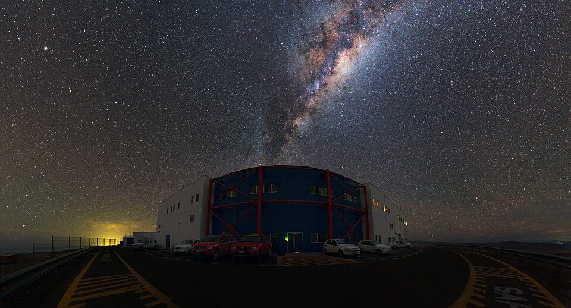

La Vía Láctea
Nuestra galaxia: una espiral barrada de 100.000 años luz con cientos de miles de millones de estrellas y un agujero negro en el centro.


En una noche oscura, lejos de las luces, se ve cruzar el cielo una banda blanquecina y difusa. Los griegos la llamaron galaxias kyklos, «círculo de leche», y la leyenda decía que era leche derramada por la diosa Hera. En España se la conocía también como el Camino de Santiago, porque guiaba a los peregrinos hacia Compostela. Esa banda es nuestra galaxia vista desde dentro.
Cómo es nuestra galaxia
La Vía Láctea es una galaxia espiral barrada: tiene un núcleo alargado en forma de barra y varios brazos que se enroscan a su alrededor. El disco mide unos 100.000 años luz de diámetro pero solo unos 1.000 de grosor, más o menos la proporción de un CD. Contiene entre 100.000 y 400.000 millones de estrellas, enormes nubes de gas y polvo, y está envuelta en un halo esférico de materia oscura que pesa mucho más que todas las estrellas juntas.
Dónde estamos
El Sol está en un brazo menor, el brazo de Orión, a unos 26.000 años luz del centro, más o menos a medio camino del borde. Da una vuelta completa a la galaxia cada 230 millones de años, a unos 830.000 km/h. La última vez que el Sol estaba en este punto de su órbita, en la Tierra empezaban a aparecer los primeros dinosaurios.
El corazón de la galaxia
El centro de la Vía Láctea está en la dirección de la constelación de Sagitario, oculto tras nubes de polvo. Allí se encuentra Sagitario A*, un agujero negro de 4,3 millones de masas solares. Los astrónomos Reinhard Genzel y Andrea Ghez demostraron su existencia siguiendo durante décadas las órbitas de las estrellas que giran a su alrededor a velocidades enormes, y ganaron el Premio Nobel en 2020.


Un mapa en 3D
El satélite europeo Gaia (2013–2025) ha medido la posición, la distancia y el movimiento de casi 2.000 millones de estrellas, el mapa más preciso jamás hecho de nuestra galaxia. Gracias a él sabemos que la Vía Láctea se ha tragado otras galaxias más pequeñas en el pasado, como una llamada Gaia-Encélado hace unos 10.000 millones de años, y que su disco está ligeramente alabeado como un sombrero.
Cómo verla
En verano, la parte más brillante de la Vía Láctea, la del centro galáctico, se ve hacia el sur al anochecer, entre las constelaciones de Escorpio y Sagitario. Hace falta un cielo sin contaminación lumínica. Se calcula que un tercio de la humanidad, y la mayoría de los europeos, ya no puede verla desde su casa.
Vídeos para entenderlo mejor
- Andrómeda Chocará contra la Vía Láctea: ¿Qué Sucederá Exactamente?QuantumFracture · 8,7 M visualizaciones
- Descubre la galaxia Vía Láctea, Sistema solar y estrellasAstronomiaweb · 2,4 M visualizaciones
Los vídeos son de YouTube y de sus autores. Se cargan solo al pulsar sobre ellos. Ver todos los vídeos →